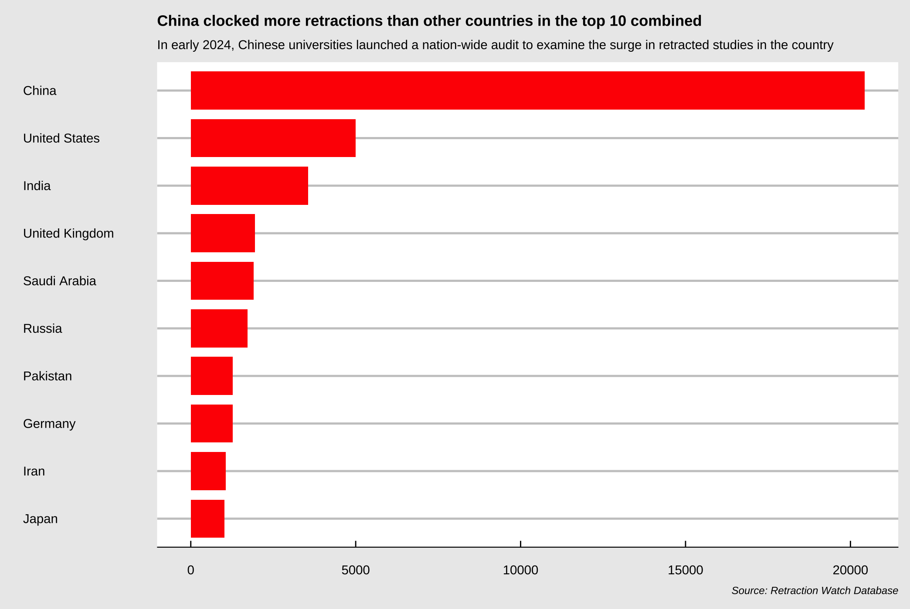
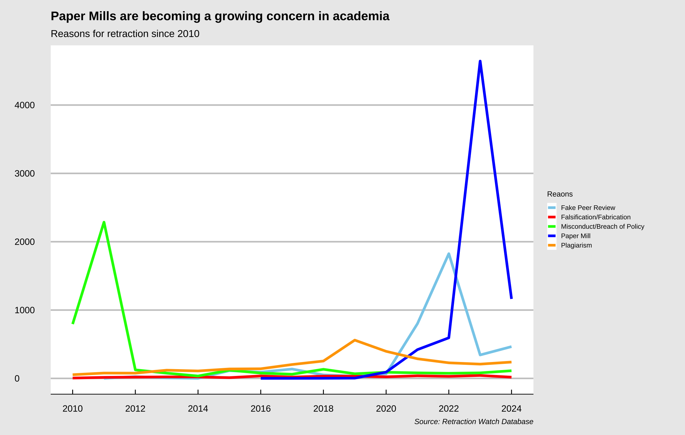
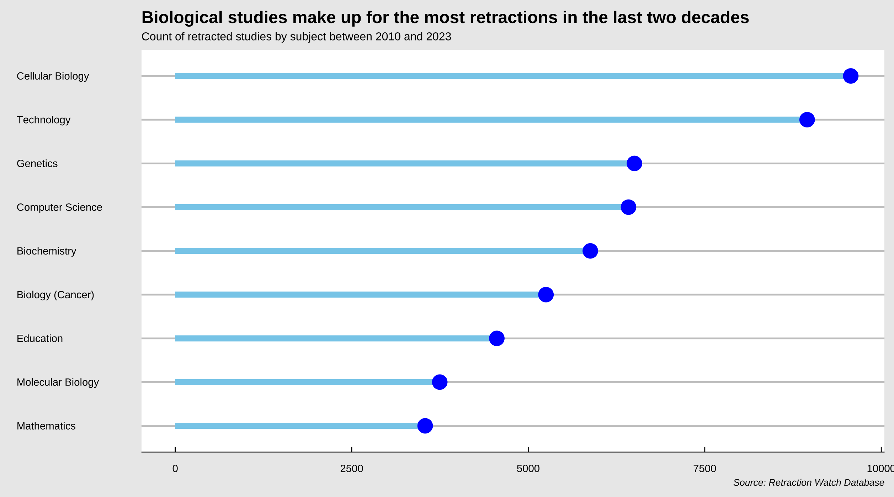

Retractions in Academic Studies Rise as Crackdown Begins On Paper Mills
Paper mills, known for publishing fraudulent or low-quality studies, have seen an increasing number of retractions since 2023.
Research paper retractions skyrocketed to 10,000 in 2023 as publishers began taking action against fake and low-quality studies, as well as misconduct, breach of policy and other reasons that experts claim damage scientific integrity.
These include studies across subjects like business, psychology, medicine, biology, and tech, an analysis of data from Retraction Watch shows. Retraction Watch is a New York based project that documents academic retractions from around the world.
While almost all major countries have had a significant number of retractions, China tops the list. In 2023 alone, more than 9,500 studies affiliated with Chinese institutions or having Chinese co-authors were retracted.
These studies include conference papers, journal articles, clinical studies, and press articles.
Ivan Oransky, co-founder of Retraction Watch, told Nature that the surge in retractions can be attributed to rise of plagiarism detection software in the past decade that helps researchers crack down on such papers better.
Retractions among paper mills
Low quality and fake papers sold for authorship are being churned out at high volumes by unreliable, unverified journals, also known as paper mills. Paper mill studies were among the top reasons for retraction and have grown significantly since 2023.
Paper mills try to sell authorships of low quality and dodgy papers to researchers trying to spruce up their CVs. The result is low-quality papers that not only affect scientific integrity, but also harm a publisher’s reputation.
Experts are also concerned about AI and its text and image generation capabilities and fear that it will become easier for paper mills to churn out low-quality studies in larger volumes.
AFake peer reviews, a fraudulent practice where authors give positive comments and reviews regarding their own work and submit it as someone else’s feedback, was the second highest reason for retractions.
Other reasons include “errors”, whether in data collection, analysis, images, or other genuine mistakes made by researchers. Several reasons that were similar, such as misconduct during clinical trials, misconduct by authors and/or institutions have been clubbed together.
Almost all major journals/academic publishers have been named in this dataset including Nature, IEEE, Sage, Oxford University Press, and the American Medical Association. Studies in the biological category have been hit the hardest, followed by tech-related subjects.
In 2023, Hindawi, a well-reputed medical publisher based in London retracted at least 6,000 papers while cleaning up paper mill publications. IEEE (Institute of Electrical and Electronics Engineers), a prominent American publisher, withdrew about 5,500 papers between 2010 and 2011.